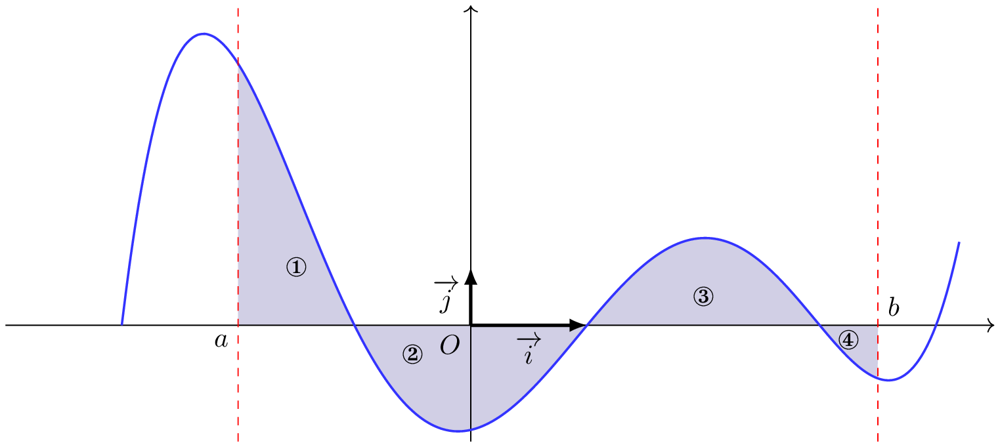
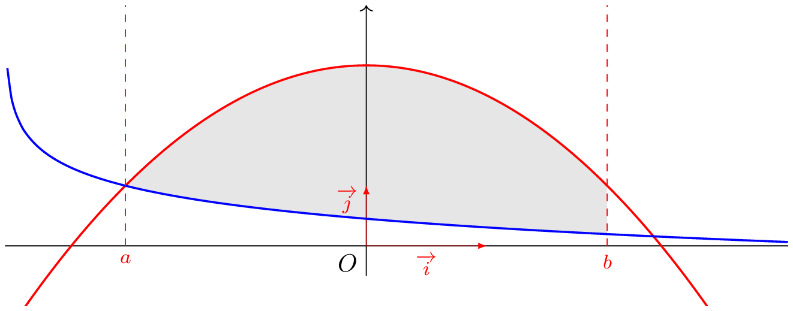
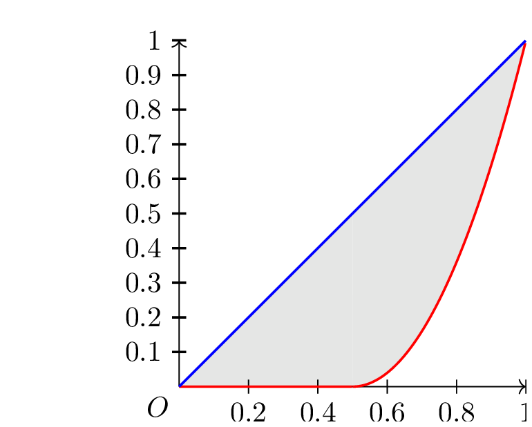
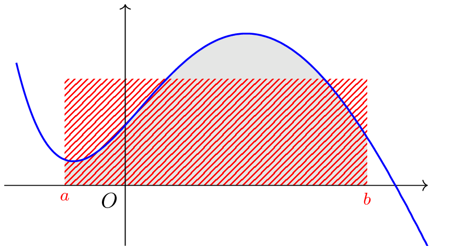

Aire sous la courbe, aire entre les courbes
Aire sous la courbe
Propriété :
Soit \(f\) une fonction continue sur \([a \, ; \, b]\). On note \(\mathscr{A}\) l’aire de la partie du plan délimitée par le graphe de \(f\), l’axe des abscisses et les droites d’équations \(x=a\) et \(x=b\). Alors
- Si \(f \geqslant 0\) sur \([a\, ; \, b]\), \(\mathscr{A}= \int_a^b f(t) \dd t\)
- Si \(f \leqslant 0\) sur \([a\, ; \, b]\), \(\mathscr{A}= -\int_a^b f(t) \dd t\)
Démonstration :
Voir la discussion de D. Perrin
Remarque :
Une autre façon de calculer l’aire sous la courbe est de calculer \[\int_a^b \abs{f(t)} \dd t\]

\[ \int_a^b \abs{f(x)} \dd x = \mbox{aire}\left(\mathcal{D}_1\right) -\mbox{aire}\left(\mathcal{D}_2\right) +\mbox{aire}\left(\mathcal{D}_3\right) -\mbox{aire}\left(\mathcal{D}_4\right) \]
On considère la fonction \(f\) définie par \(f(t) = (t-1)\e^{1-t}\) sur \([0 \, ; \, +\infty[\).
- Déterminer une primitive de \(f\).
Afficher la correction :
\(f\) est continue sur son ensemble de définition, elle y admet donc des primitives. Soit \(F\) celle s’annulant en \(0\), alors \[F(x)= \int_0^x f(t) \dd t\] On pose :
| \(u(t) = t - 1\) | \(u'(t) = 1\) |
| \(v'(t) = \e^{1 - t}\) | \(v(t) = - \e^{1 - t}\) |
Toutes les fonctions étant continues car dérivable sur \([1~;~+ \infty[\), on a par intégration par parties :
\[ \begin{aligned} F(x) &= \left[-(t-1)\e^{1 - t} \right]_1^x - \int_1^x -\e^{1 - t}\dd t \\ &= \left[- (t - 1)\e^{1 - t} \right]_{1}^x - \left[\e^{1 - t} \right]_{1}^x \\ &= \left[-t \e^{1 - t} \right]_{1}^x\\ &= - x\e^{1 - x} - (1\e^0) \\ &= 1 - x\e^{1 - x}. \end{aligned} \]- Déterminer l’aire de la partie du plan plan délimitée entre la représentation graphique de \(f\), l’axe des abscisses et les droites d’équations \(x=0\) et \(x=a\)
Afficher la correction :
Cette fonction est négative sur \([0 \, ; \,1]\) et positive sur \([1 \, ; +\infty[\).
On cherche à déterminer l’aire sur \([0 \, ; \, a]\), où \(a >1\). On a d’après la relation de Chasles \[\int_0^a f(t) \dd t =\int_0^1 f(t) \dd t + \int_1^a f(t) \dd t \] Donc en notant \(\mathscr{A}(a)\) l’aire de la partie du plan délimitée entre la représentation graphique de \(f\), l’axe des abscisses et les droites d’équations \(x=0\) et \(x=a\), on a \[\mathscr{A}(a) = -\int_0^1 f(t) \dd t + \int_1^a f(t) \dd t \] D’après la question précédente, on déduit que
- Que peut-on dire de cette aire lorsque \(a \rightarrow +\infty\) ?
Afficher la correction :
Pour tout réel \(a> 1\), \(2-a\e^{1-a} = 2 - (1-a)\e^{1-a} + \e^{1-a}\) Or \(\lim_{a \to + \infty} 1-a=-\infty\) et \(\lim_{y \to -\infty} y \e^y = 0\), donc par composition \(\lim_{a \to +\infty}(1-a) \e^{1-a} = 0\).De plus \(\lim_{a \to + \infty} \e^{1-a} b=0\).
On déduit que \(\lim_{a \to + \infty} \mathscr{A}(a) = 2\).
Ainsi, l’aire est finie.
Aire entre deux courbes
Propriété :
Soit \(f\) et \(g\) deux fonctions continues sur un intervalle \([a~;~b]\).
On suppose que pour tout \(x \in [a~;~b],~f(x) \leqslant g(x)\).
Alors l’aire comprise entre les deux courbes et les droites d’équation \(x=a\) et \(x=b\) est \[\int_a^b g(x) \dd x - \int_a^b f(x)~ \dd x = \int_a^b (g(x)-f(x))~ \dd x\]
Remarque :
Il n’est pas nécessaire que les fonctions \(f\) et \(g\) soient positives.
L’unique condition est que la représentation graphique de l’une soit toujours au-dessus de celle de l’autre.
On considère les fonctions \(f\) et \(g\) définies sur $ ]-3;+$, que pour tout \(x \in[-2~;~2]\), \(g(x) \geqslant f(x)\).
Ainsi l’aire comprise entre les deux courbes, et les droites d’équations \(x=-2\) et \(x=2\) est donné, en unité d’aire, par
\[ \int_{-2}^2 -\frac{1}{2}x^2+3 +\frac{1}{2}\ln(x+3) -1 \dd x \]

Dans une région française, la répartition de l’impôt sur le revenu dans l’ensemble des loyers fiscaux est modélisée par la fonction \(f\) telle que
\[f(x) = \left\{\begin {array}{l}0~;~x \in [0~;~0,5]\\
4x^2-4x+1~;~x \in[0,5~;~1]\end{array} \right.\] La représentation graphique de la fonction est une courbe de Lorenz.
On mesure la concentration de l’impôt par l’indice de Gini \[\gamma = 2 \mathscr{A}\] Où \(\mathscr{A}\) est l’aire comprise entre les droites d’équations \(y=x\), \(x=0\), \(x=1\) et la représentation graphique de la fonction \(f\).
Détermienr l’indice de Gini correspondant
Afficher la correction :

\[ \mathscr{A} = \int_0^1 x-f(x)\dd x \]
La fonction \(x \longmapsto x- f(x)\) est continue sur \([0~;~1]\), donc y admet des primitives.
De plus pour tout \(x \in [0~;~1],~~x \geqslant f(x)\).
(Sinon la représentation graphique de \(f\) ne serait pas une courbe de Lorenz).
Ainsi \(\mathscr{A}\) est l’aire comprise entre les deux courbes et les droites d’équations \(x=0\) et \(x=1\).
On déduit de la relation de Chasles que :
\[ \mathscr{A} = \int_0^{0.5} (x-f(x))\dd x + \int_{0.5}^1 (x-f(x)) \]
Or sur \([0~;~0,5]\), \(f(x) = 0\).
Donc
\[ \mathscr{A} = \dd x = \int_0^{0.5} x-0\dd x + \int_{0.5}^1 (x-f(x))\dd x \]
Soit \(h(x) = x-f(x) = -4x^2+5x -1\).
\(h\) étant continue, elle admet des primitives sur \([0,5~;~1]\).
Soit \(H\) une de ses primitives, alors \[H(x) = -\frac{4}{3}x^3 + \frac{5}{2}x^2-x\] Ainsi
\[\mathscr{A} = \dfrac{1}{2}0.5^2 -\frac{1}{2}0 + H(1) - H(0.5) = \dfrac{1}{3}\] Donc
\[\gamma = 2 \mathscr{A} = \frac{2}{3} \approx 0.667\]Valeur Moyenne
Définition :
Soit \(f\) une fonction continue sur un intervalle \(\left[ a ~;~ b \right]\) de \(\R\).
On appelle valeur moyenne de \(f\) sur \(\left[ a ; b \right]\) le réel \(\mu = \dfrac{1}{b-a}\displaystyle\int_{a}^{b}f(x)\dd x\)
Interprétation graphique :
Dans le cas où \(f\) est une fonction continue et positive sur \([a;b]\).
L’aire du domaine compris entre la courbe \(\mathcal{C}_f\), l’axe des abscisses et les droites d’équation \(x=a\) et \(x=b\) est égale à l’aire du rectangle de côtés \(\mu\) et \(b-a\)

Le bénéfice, en milliers d’euros, qui à une production de \(q\) kg de produit est donné par la fonction \(f\) définie sur \([0~;~2]\) par \(f(q) = -3q^2+6q-1.5\).
Cette fonction étant un polynôme, alors elle admet des primitives sur \([0~;~2]\).
Dé”termienr la valeur moyenne du bénéfice.
Afficher la correction :
Soit \(F\) l’une d’entre elles, \(F(x)= -q^3+3q^2-1.5q\).Ainsi la moyenne des bénéfices est donnée par \(m = \dfrac{1}{2-0} \int_0^2 f(q) \dd q = 0.5\).
Ainsi la valeur moyenne du bénéfice de \(0\) à \(2\) kg est de \(500\) euros.
Remarque : Il ne faut pas confondre le bénéfice moyen \(\dfrac{f(q)}{q}\) et la moyenne du bénéfice !!